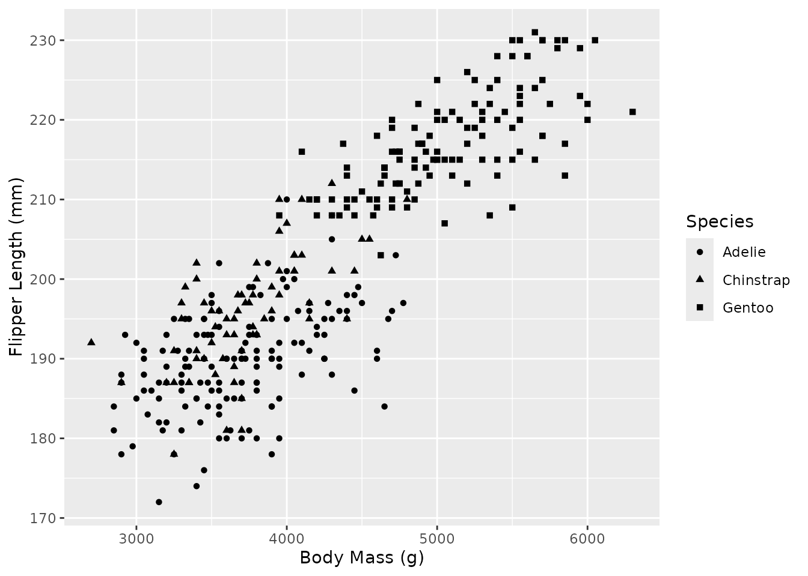
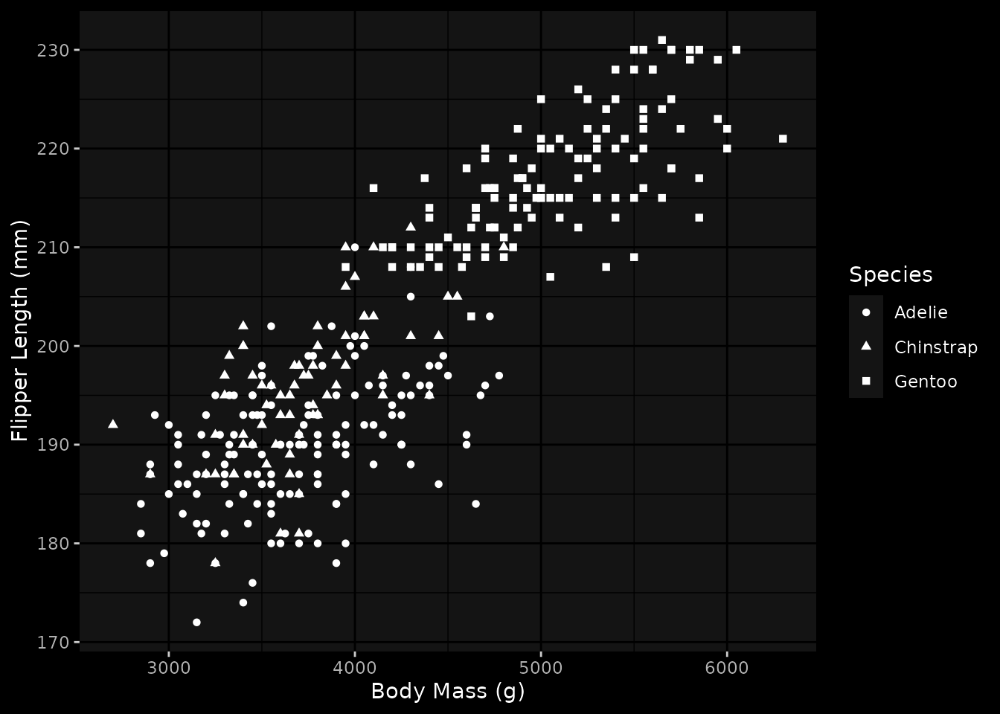
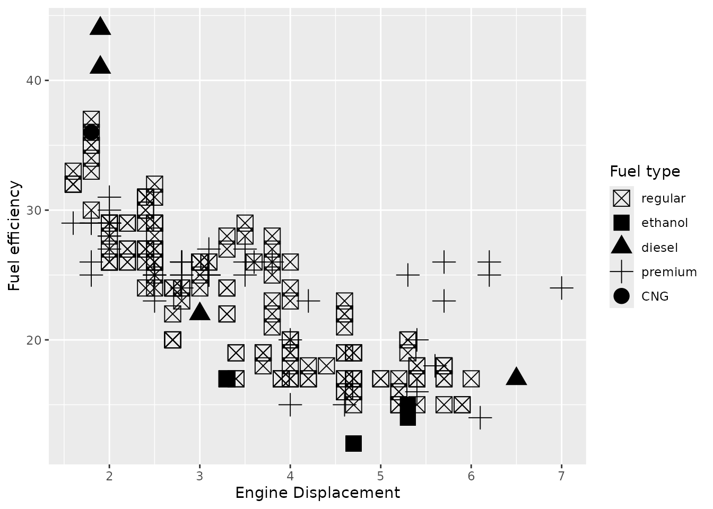
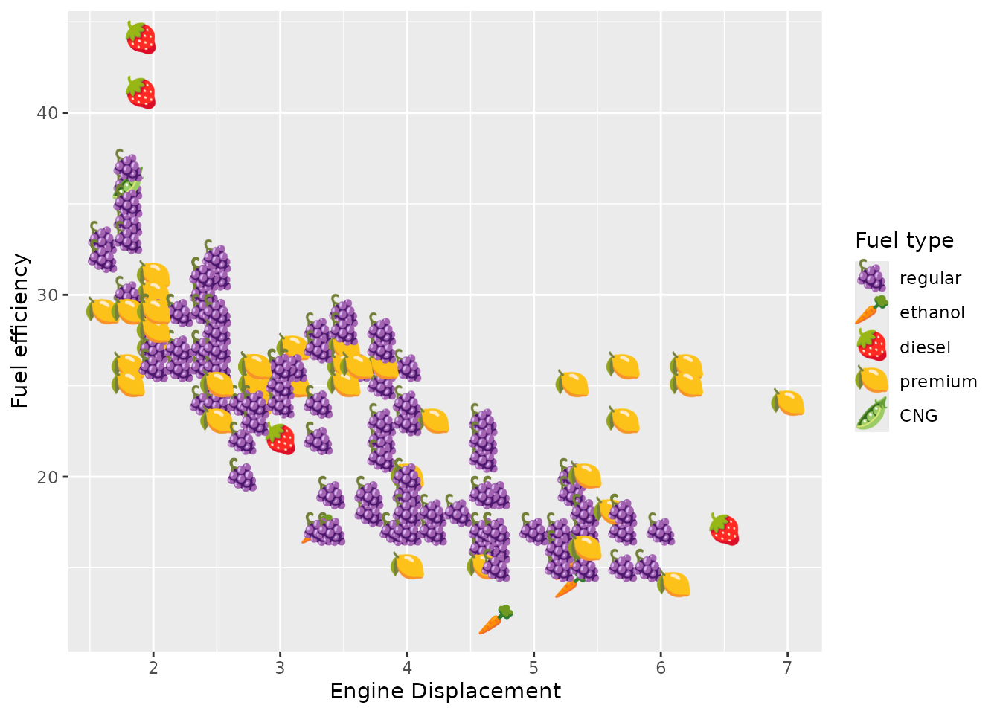
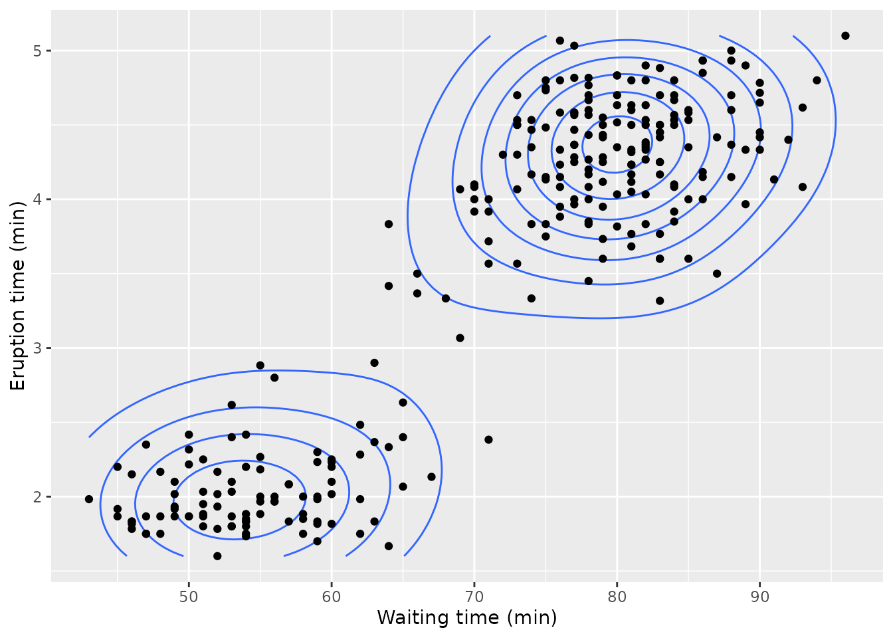
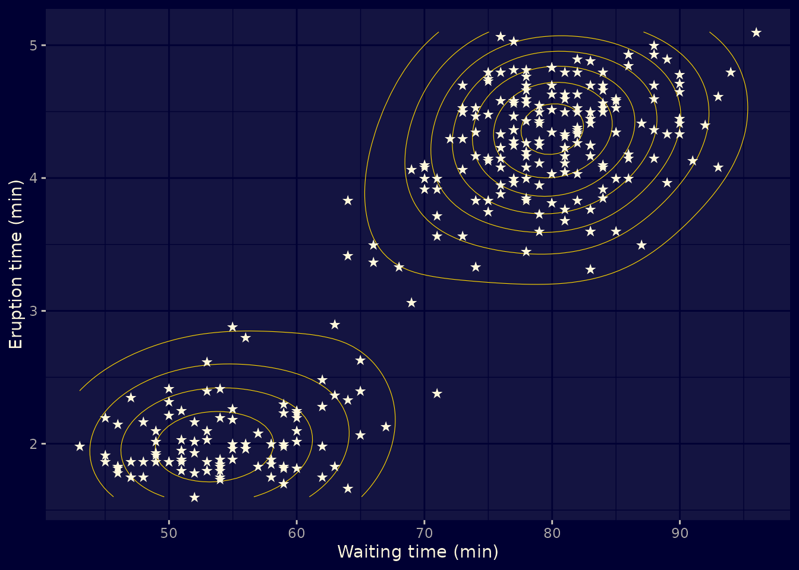
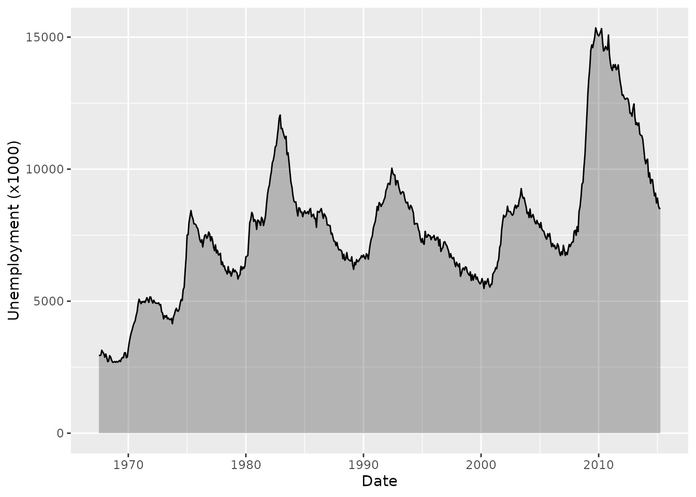
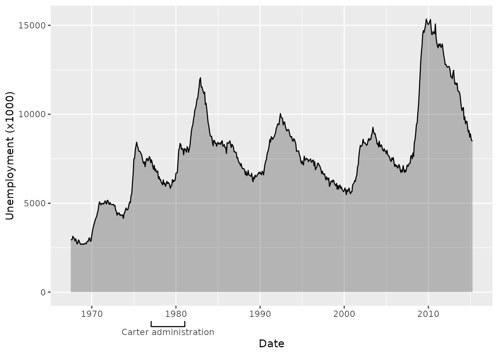
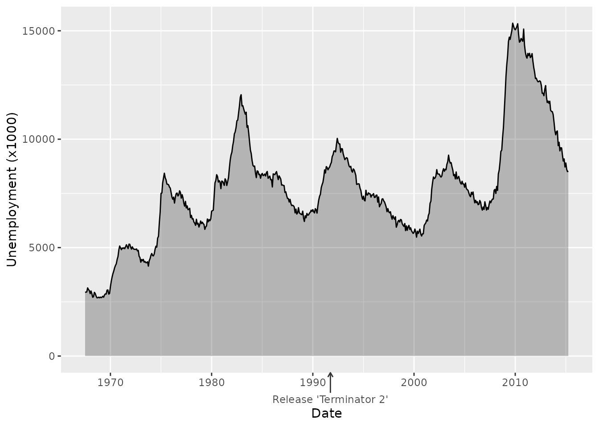

library(ggplot2)
# Emoji will not always render flawlessly with default device
knitr::opts_chunk$set(dev = "ragg_png")Exercises for session 4
Exercise 4.1: Ink & Paper
We’ll work with this plot of the penguins dataset.
p <- ggplot(palmerpenguins::penguins) +
aes(body_mass_g, flipper_length_mm, shape = species) +
geom_point(na.rm = TRUE) +
labs(
x = "Body Mass (g)",
y = "Flipper Length (mm)",
shape = "Species"
)
p
Pick any of the pre-existing complete themes and make a ‘dark mode’ variant of it.
Use the ink and paper arguments in —for example— theme_gray().
A different theme choice is fine, but the important bit is to set paper to a dark colour and ink to a light colour.
p + theme_gray(ink = "white", paper = "black")
Exercise 4.2: Default palettes
This plot has a shape scale with the default palette.
p <- ggplot(mpg, aes(displ, hwy, shape = fl)) +
geom_point(size = 5) +
scale_shape_discrete(
breaks = c(
regular = "r",
ethanol = "e",
diesel = "d",
premium = "p",
CNG = "c"
)
) +
labs(
x = "Engine Displacement",
y = "Fuel efficiency",
shape = "Fuel type"
)
p
Make a discrete shape palette using emoji. You can pick a theme like ‘farm animals’, ‘bugs’, ‘flowers’ or other symbols. Set it as the default palette in the theme().
Here are some example palette values:
c("🐎", "🐄", "🐏", "🐐", "🐐")
c("🐝", "🐞", "🕷️", "🕷️", "🦋")
c("🌹", "🌻", "🌷", "🪻", "🪷")Here are some example palette values:
c("🐎", "🐄", "🐏", "🐐", "🐐")
c("🐝", "🐞", "🕷️", "🕷️", "🦋")
c("🌹", "🌻", "🌷", "🪻", "🪷")Shapes can use emoji because these count as ‘single letter’ strings. The palette can be a character vector that is compatible with scales::as_discrete_pal().
The important bit is to realise that one should populate the palette.shape.discrete argument.
my_shape_pal <- c("🫛", "🍓", "🥕", "🍋", "🍇")
p + theme(palette.shape.discrete = my_shape_pal)
Exercise 4.3: Build your own theme
We have the following contour plot of eruption measurements taken from the geyser ‘Old Faithful’.
p <- ggplot(faithful) +
aes(waiting, eruptions) +
geom_density2d(bins = 8) +
geom_point() +
labs(
x = "Waiting time (min)",
y = "Eruption time (min)"
)
p
Pick some topic that has a strong association with a colour scheme. It can be a forest, the ocean, the desert or something you come up with. Create your own theme with that topic in mind that:
- Your theme is a function
- Passes arguments to a base theme
- Adjusts layer defaults
You may want to pass an ink/paper/accent argument to the base theme.
You may want to pass an ink/paper/accent argument to the base theme.
Layer defaults can be set using element_geom().
This is more of an exercise without a ‘correct’ answer, but here is an example using the night sky as topic.
my_theme <- function(ink = "cornsilk", paper = "#000033", accent = "gold", ...) {
theme_gray(ink = ink, paper = paper, accent = accent, ...) +
theme(
geom = element_geom(pointshape = "\u2605", pointsize = 3, linewidth = 0.2)
)
}
p + my_theme()
Exercise 4.4: custom guides
We have the following unemployment data from the United States.
library(legendry)
p <- ggplot(economics, aes(date, unemploy)) +
geom_area(colour = "black", alpha = 0.3) +
labs(
x = "Date",
y = "Unemployment (x1000)"
)
p
Pick some event or period in the range of the plot above. Create an axis annotation to indicate that event or period. You may need to construct the appropriate key argument for a custom guide.
If you’re stuck without inspiration, here are some arbitrary events and periods:
- First release of ggplot2 (2007)
- Margaret Thatcher serves as the UK’s prime minister (1979-1990)
- Release of the original Sony Walkman (1979)
- The pop group ‘The Spice Girls’ (1994-2000)
- Fall of the Berlin Wall (1989)
- Release of the pinnacle of telecommunication, the Nokia 3310 (2000)
- The British sitcom ‘Mr. Bean’ (1990-1995)
- Thomas Lin Pederson was born (1985)
- David Tennant plays the 10th Doctor in ‘Doctor Who’ (2005-2010)
- The American sitcom ‘Golden Girls’ (1985-1992)
- The birth of Hadley Wickham (1979)
- Texas Instruments launches its first graphing calculator (1990)
If you’re stuck without inspiration, here are some arbitrary events and periods:
- First release of ggplot2 (2007)
- Margaret Thatcher serves as the UK’s prime minister (1979-1990)
- Release of the original Sony Walkman (1979)
- The pop group ‘The Spice Girls’ (1994-2000)
- Fall of the Berlin Wall (1989)
- Release of the pinnacle of telecommunication, the Nokia 3310 (2000)
- The British sitcom ‘Mr. Bean’ (1990-1995)
- Thomas Lin Pederson was born (1985)
- David Tennant plays the 10th Doctor in ‘Doctor Who’ (2005-2010)
- The American sitcom ‘Golden Girls’ (1985-1992)
- The birth of Hadley Wickham (1979)
- Texas Instruments launches its first graphing calculator (1990)
You can combine legendry::primitive_bracket() + legendry::key_range_manual() for periods.
You can use legendry::guide_axis_base() + legendry::key_manual() for point-events.
For a range of dates:
my_annotation <- primitive_bracket(
key = key_range_manual(
start = as.Date("1977-01-20"),
end = as.Date("1981-01-20"),
name = "Carter administration"
),
bracket = "square"
)
p + guides(x = compose_stack("axis", my_annotation))
For an event:
my_annotation <- guide_axis_base(
key = key_manual(
aesthetic = as.Date("1991-09-27"),
label = "Release 'Terminator 2'"
),
# Longer arrow tick
theme = theme(
axis.ticks.length = unit(6, "mm"),
axis.ticks = element_line(arrow = arrow(length = unit(1.5, "mm")))
)
)
# Swapping the composition is a little bit cheating on my end
p + guides(x = compose_ontop("axis", my_annotation))